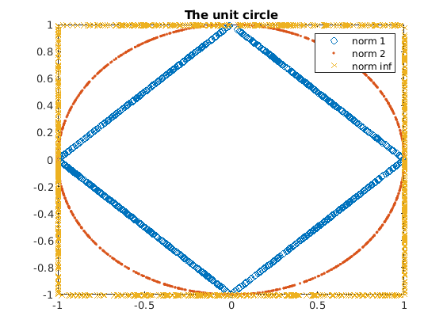
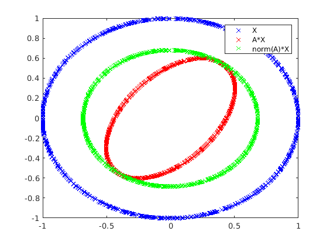

Contents
Define sizes for vectors and matrices
m = 2; n = 1000;
Compute vector norms
generate a vector of size m with random integers from -5 to 5
x = randi(10, m, 1)-5*ones(m,1) % compute its first norm norm(x, 1) % compute the second norm norm(x, 2) % compute the infinity norm norm(x, inf)
x =
5
-4
ans =
9
ans =
6.4031
ans =
5
Representation of the unit circle using different vector norms
Generate a matrix with random elements from -inf to inf
X = randn(m, n); % Normalize all the 'i'th column using different norms and plot the end points % (the unit 'circle') for all the norms p = [inf, 1, 2]; p_linetype = {'.', 'o', 'x'}; % Norm 1: p = 1; X1 = zeros(size(X)); for i = 1:n X1(:,i) = X(:, i) / norm(X(:, i), 1); end % Norm 2: p = 2; X2 = zeros(size(X)); for i = 1:n X2(:,i) = X(:, i) / norm(X(:, i), p); end % Norm inf: p = inf; Xinf = zeros(size(X)); for i = 1:n Xinf(:,i) = X(:, i) / norm(X(:, i), p); end % plot unit circles plot(X1(1,:), X1(2,:), 'o') hold on plot(X2(1,:), X2(2,:), '.') plot(Xinf(1,:), Xinf(2,:), 'x') legend ('norm 1', 'norm 2', 'norm inf') title ('The unit circle')
Rotate and scale the unit vectors by multiplying with a random matrix
choose a random transformating matrix
A = rand(m,m); % Apply transformation B = A * X2; % Plot original unit circle and the transformed one figure plot(X2(1,:), X2(2,:), 'xb') hold on plot(B(1,:), B(2,:), 'xr') % Check norm of the transforming matrix s = norm (A, 2); % Plot maximal scaling Y = s * X2; plot(Y(1,:), Y(2,:), 'xg') legend('X', 'A*X', 'norm(A)*X')
Define some matrices
% Generate two arbitrary matrices A = rand(m, m); % The identity matrix I = eye(m); % S symmetric matrix As = A * A';
QR decomposition
[Q, R] = qr(A); % Check orthogonality of Q Q*Q' norm(Q*Q'- I, 1) norm(Q*Q'- I, 2) norm(Q*Q'- I, 'fro') % Check determinants % det(Q*Q')=det(Q)*det(Q')=det (I) = 1, det(Q)= det(Q') -> |det(Q)| = 1 det(Q) % det(A) = det(Q*R) = det(Q)*det(R) = +-1 * det (R) -> |det(A)| = |det (Q)| det(A) det(R) % as R is triangular matrix, the later is the same as the product of the % diagonals: prod(diag(R))
ans =
1.0000 0.0000
0.0000 1.0000
ans =
1.9572e-17
ans =
1.9572e-17
ans =
2.7680e-17
ans =
-1
ans =
0.3318
ans =
-0.3318
ans =
-0.3318